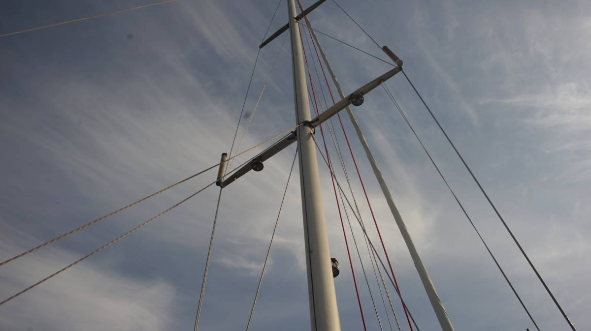
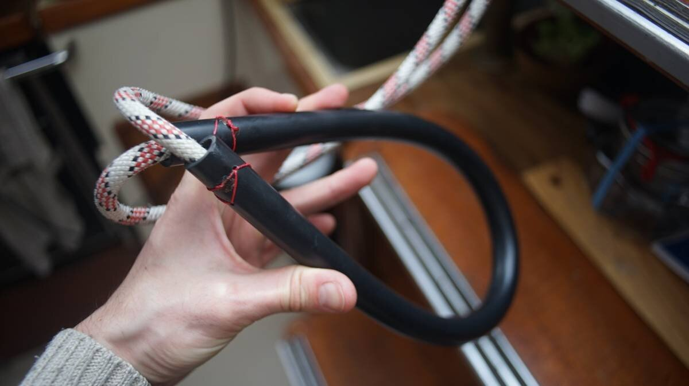
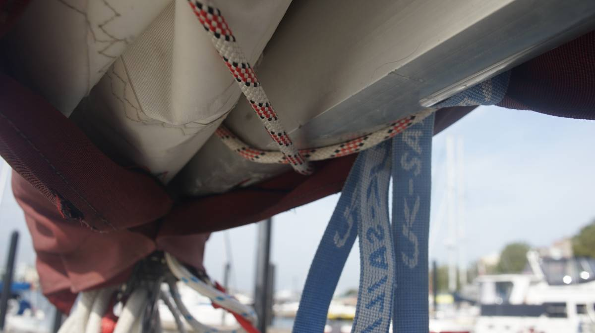
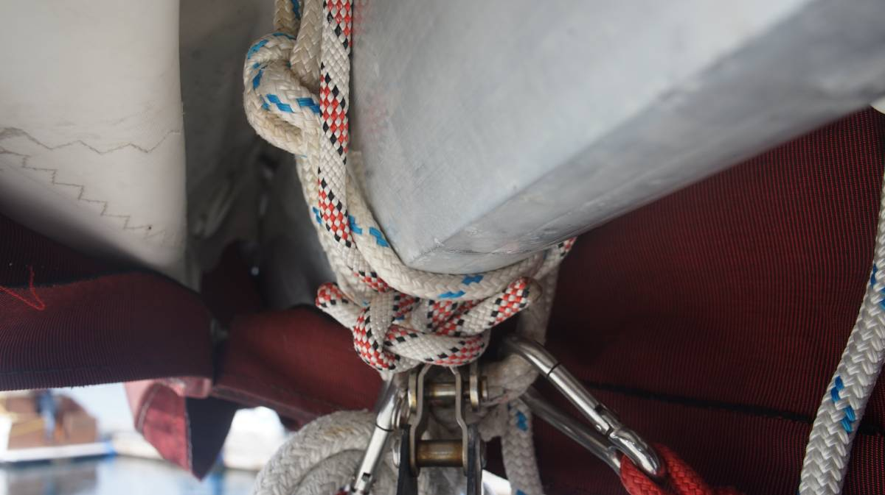
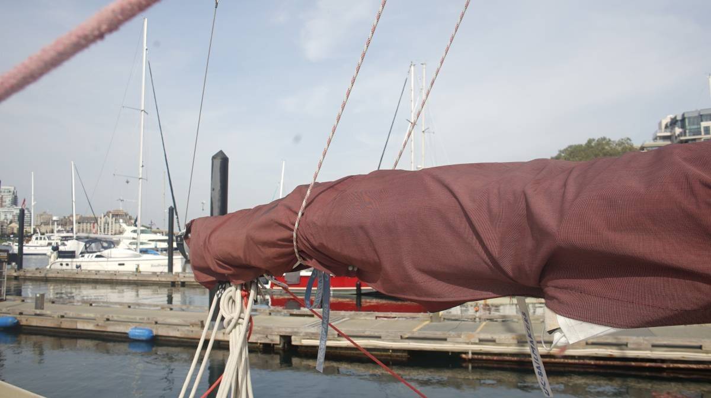

lazy jacks
2022.08.20
Saturna Island BC, Canada.
Lazy jacks are a type of rigging designed to assist in sail handling. "They consist of a network of cordage which is rigged to a point on the mast and to a series of points on either side of the boom; these lines form a cradle which helps to guide the sail onto the boom when it is lowered, reducing the crew needed to secure the sail."
Lazy jacks are often sold as sets, and require that you make holes in your boom and mast. We decided to try and make ourselves a set that uses few parts, and that doesn't make holes anywhere on the mast or on the boom. We made lazy, lazy jacks.
We reasoned that a single line wrapping around the top of the first spreader and around the bottom of the boom would be enough. To reduce chafe, we added some old tubing we had aboard and made a collar for the part laying around the mast, we added a few stitches to keep it in place.
We brought the two ends of the lines to the bottom of the boom, made a sort of "X", brought them around the top of the boom again and made a good knot. Note that this is only possible with a loose-footed main (a main that doesn't fit into a track on the boom).
The line doesn't slide forward because it sits behind the loop for our first reef (blue line).
The best part about this setup is what we don't have to modify the sail cover at all!
This catches a lot of the sail when it comes down, but we plan to tie another set of ropes from that line to the bottom the boom at another point to create a sort of "V" to catch more of the sail.
Because our mainsail has full battens, they sometimes catch into the lazy jacks when we raise it and so we have to raise it slowly and to lead it by hand inbetween the first two battens (the rest isn't affected).